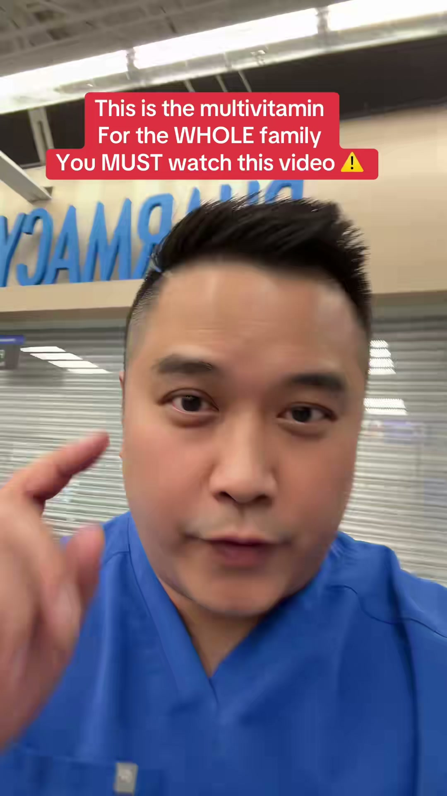
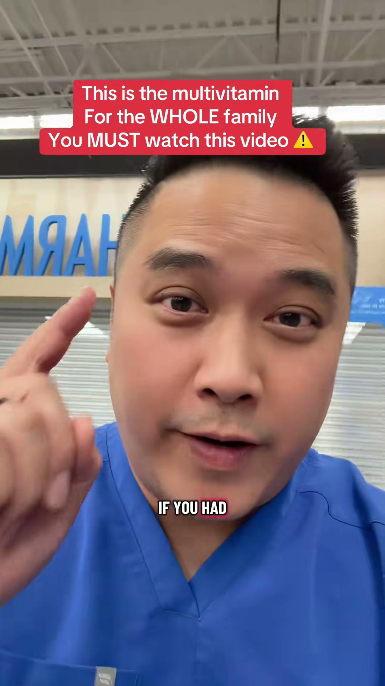
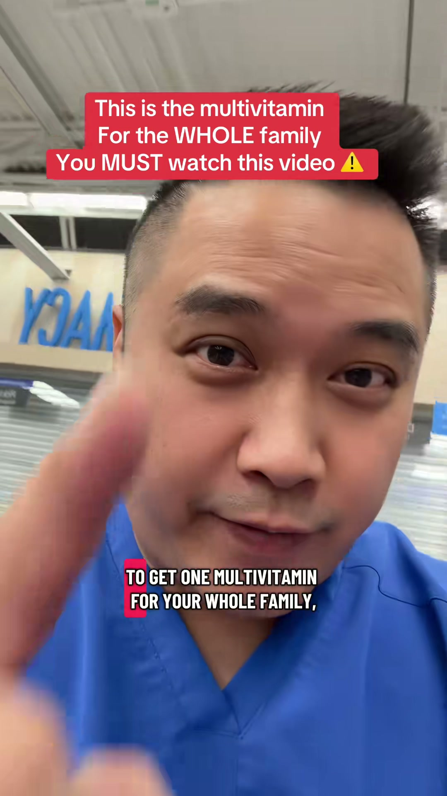
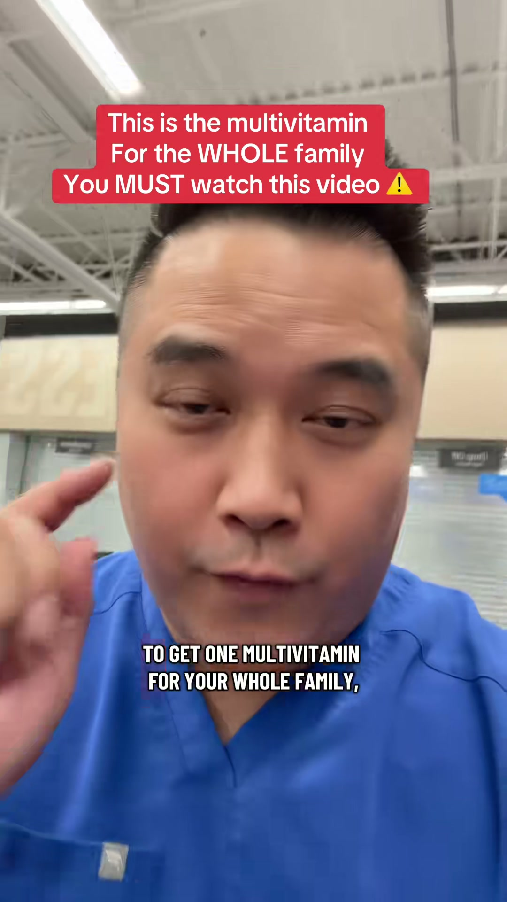
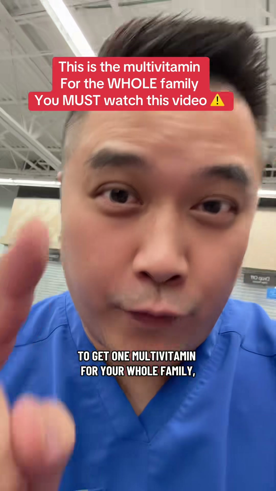
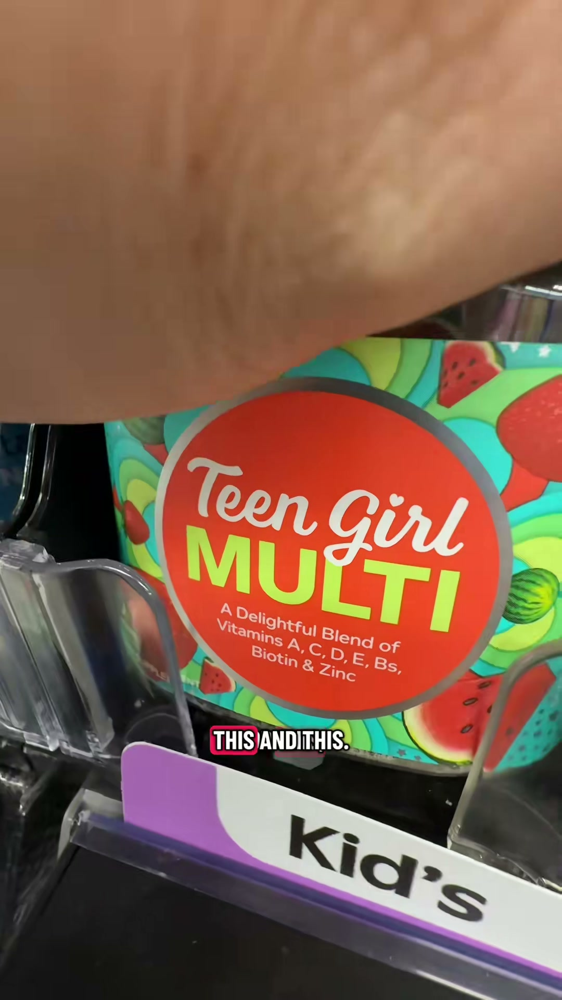
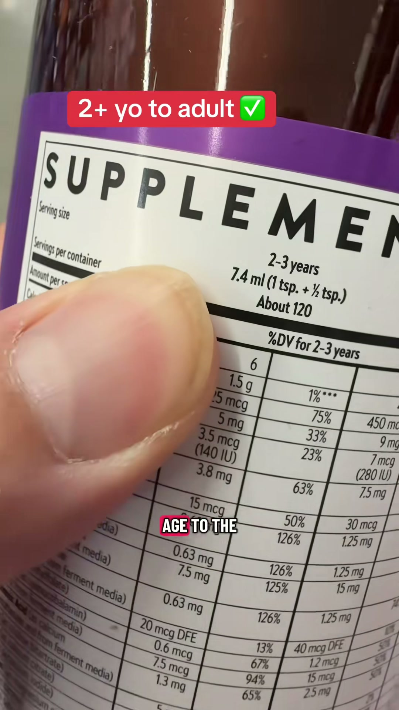
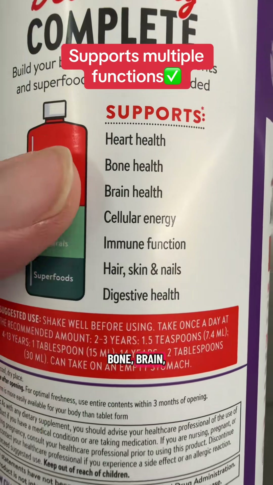
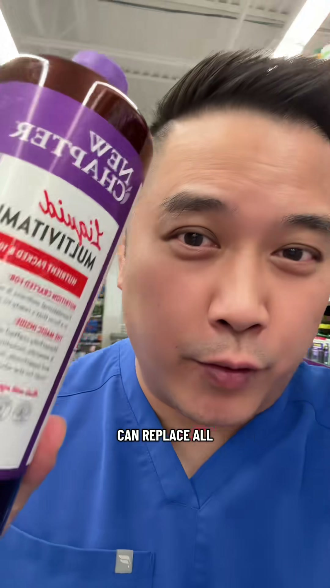

ViralScope AI / video3
ViralScope AI
TikTok / healthcare / multovitamin breakdown — for whole family: what's worth copying first, then where conversion stalls.
Key Frames









✅ What's Working — Repeatable
Repeatable Viral Formula
Reusable template structure:
- Open with one big buying shortcut
"If you only buy one [product category] for [audience], get this."
- Show authority in the first frame
Uniform, workplace, credential subtitle, or role statement
- State why your recommendation matters
"I've been a [role] for [X years]."
- Show what this replaces
Pan across 2-3 separate products, then cut to the one solution
- Prove who it is for
Show label, age range, serving guidance, or approved use case
- Stack practical benefits fast
3-5 clear functions, not a long medical list
- Close with a simple next action
"Screenshot this" or "Link below if you want the one-bottle option"
Action: Use this exact structure for future healthcare UGC, especially products that reduce decision fatigue.
Our Brand Version
Ready-to-shoot English script / shot list:
Shot 1 (0.0s-1.5s)
Creator in kitchen or pharmacy aisle, bottle already in hand, close to camera.
Line: "If you're buying separate vitamins for your house, stop for a second."
Shot 2 (1.5s-3.5s)
Hold up 3 different vitamin products or 3 empty spots labeled "kids / teens / adults".
Line: "Most families are overbuying when one liquid multivitamin can cover everyone."
Shot 3 (3.5s-6.0s)
Creator points to self or subtitle with credentials.
Line: "I'm a pharmacist, and this is the kind of shortcut I actually like."
Shot 4 (6.0s-9.0s)
Close-up of bottle front.
Line: "This is New Chapter Liquid Multivitamin."
Shot 5 (9.0s-12.0s)
Close-up of label or dosage panel with finger pointing at age info.
Line: "It works from age 2 through adults, so it solves one of the biggest family supplement problems."
Shot 6 (12.0s-16.0s)
On-screen text bullets while rotating bottle: 22 vitamins + minerals, fermented B vitamins, organic fruit blends.
Line: "You get 22 vitamins and minerals, plus fermented B vitamins and organic fruit blends."
Shot 7 (16.0s-20.0s)
Quick montage: parent pouring liquid, teen taking it, bottle back on counter.
Line: "It supports everyday needs like immune function, bone health, brain health, and energy."
Shot 8 (20.0s-24.0s)
Show 3 bottles on counter, then remove them and leave only this one.
Line: "So instead of managing multiple bottles, you can simplify to one."
Shot 9 (24.0s-28.0s)
Taste/reaction shot or spoon pour shot.
Line: "And because it's liquid, it's easier for a lot of families to actually use consistently."
Shot 10 (28.0s-32.0s)
Creator facing camera, bottle near face.
Line: "If you want the one-bottle family option, check the link below."
⚠️ What to Fix
Conversion Diagnosis · Priority Actions
- Keep this creator angle for conversion-focused healthcare content. The pharmacist identity, pharmacy setting, and recommendation format are doing real work with the viewers who matter, so this is a strong fit for trust-driven supplement sales even if it is not broad-reach entertainment content.
- Scale by widening the hook without losing the expert frame. The current message is effective for viewers already interested in family supplement simplification, but it likely stays narrow because it enters too quickly as a specific recommendation. Test broader top-of-funnel hooks such as family vitamin confusion, overbuying, or “one bottle instead of three,” while keeping the creator’s authority visible in the first frame.
- Preserve the conversion mechanics and add more everyday-use proof. The recommendation works because it is practical, rational, and trust-led. To lift volume without hurting conversion efficiency, keep the expert endorsement, replacement logic, and label proof, then layer in family routine visuals, pour shots, or “how this fits daily use” moments so the content feels more relatable and more shareable.
Creator Feedback
This video is working in an important way: it may not be pulling huge traffic, but the people who do watch are relatively qualified, and the conversion rate is solid for the category. Your strongest advantage here is credibility. The pharmacist framing, direct recommendation style, and clear “one product for the whole family” angle make the content feel trustworthy and useful rather than promotional.
For the next version, keep that exact authority-led recommendation style, because it is clearly helping conversion. The main opportunity is to make the video easier for a broader audience to stop on and share. Bring the product into frame earlier, simplify the opening into a bigger everyday family problem, and add one real-life usage moment so the advice feels more lived-in. That should help expand reach while keeping the precision that is already driving orders.